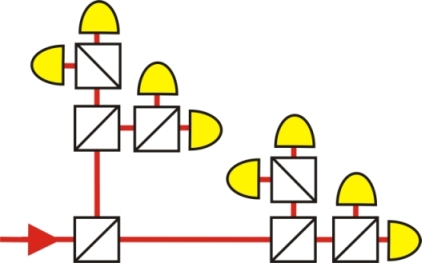
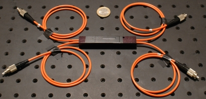
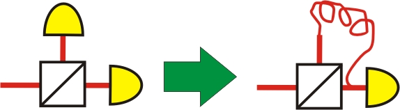

Photonenstatistik Kapitel 1:
Aufbau des Experimentes
In diesem Kapitel wird der Aufbau des Experimentes zur Messung der Photonenstatistik vorgestellt. Das Experiment ist ein gutes Beispiel, wie eine grundlegende Idee mit glasfaserintegrierten optischen Komponenten und Verzögerungsleitungen vereinfacht und kostengünstig hergestellt werden kann.
Netzwerk aus Strahlteilerwürfeln
Mit einem einzelnen symmetrischen Strahlteilerwürfel können Photonenzahlen bis n=2 aufgelöst werden. Um höhere Photonenzahlen aufzulösen müssen mehrere Strahlteiler benutzt werden. Im skizzierten Aufbau der Abbildung 1 gibt es acht verschiedene Möglichkeiten, wie sich ein Lichtpuls aufteilen kann. Im Idealfall kann mit diesem Aufbau die Photonenzahl n=8 aufgelöst werden. Der Nachteil des skizzierten Experimentes aus Strahlteilerwürfeln ist ein sehr großer und teurer optischer Aufbau. Für das Netzwerk werden acht Einzelphotonendetektoren (Stückpreis 5.000€) und sieben Strahlteilerwürfel (Stückpreis 400 €) benötigt. Das Netzwerk würde zudem mit allen Spiegeln und Iriden zur exakten Justierung einen ganzen optischen Tisch füllen. Die Grundlagenforschung ist daran interessiert möglichst günstige und einfache Lösungen zu finden. Wie kann das Experiment günstiger und einfach realisiert werden?

Abb. 1: Netzwerk aus symmetrischen Strahlteilern zum Auflösen der Photonenzahl bis n=8
Realisierung mit Glasfaserkabel
Jedes quantenoptische Experiment sollte für die Alltagsanwendung so entwickelt werden, dass es ohne einen massiven optischen Tisch auskommen kann. Eine Möglichkeit den Freistrahlaufbau von Abbildung 1 auf dem optischen Tisch zu umgehen ist die Verbindung der optischen Komponenten mit Glasfaserkabeln. Insgesamt werden sieben Strahlteilerwürfel benötigt (Abb. 2). Der Strahlteiler ist dabei in einem kleinen schwarzen Kästchen untergebracht. Die beiden Ein- und Ausgänge des Strahlteilers sind mit Glasfaserkabeln verbunden. Mit solchen fasergebundenen Strahlteilern und Verbindungssteckern für die Glasfaserkabel wird kein optischer Tisch mehr benötigt. Der gesamte optische Aufbau lässt sich in einer Schuhschachtel unterbringen.

Abb. 2: Strahlteiler faserintegriert mit zwei Eingängen (links)
und zwei Ausgängen (rechts: reflektiert und transmittiert)
Die teuersten Komponenten im Experiment sind die acht Einzelphotonendetektoren. Ist es möglich auf einzelne Detektoren zu verzichten? Ja - durch die Variation der Ankunftszeit der Photonen auf die Detektoren (Abb. 3). Mit diesem Trick werden von den ursprünglich acht Detektoren nur noch vier Detektoren benötigt. Trifft ein heller Lichtpuls auf einen Strahlteiler, so wird dieser zu 50% transmittiert und zu 50% reflektiert. Der Lichtpuls im transmittierten Zweig wird sofort vom Detektor registriert. Der Lichtpuls im reflektierten Zweig des faserintegrierten Strahlteilers muss erst noch ein 20m langes Glasfaserkabel (c=200.000.000m/s) durchlaufen und trifft somit 100ns später als der transmittierte Lichtpuls auf den Detektor. Durch die Berücksichtung der Zeitdifferenz zwischen der Aussendung durch den Laser und der Detektion des Lichtpulses können die Signale des einzelnen Detektors dem transmittierten oder refklektierten Zweig zugeordnet werden. Ist es möglich die vier vorhanden Detektoren und die sieben fasergebundenen Strahlteilerwürfel noch weiter zu reduzieren?

Abb. 3: Zwei Detektoren am Strahlteiler können mit einer Verzögerung auf einen Detektor reduziert werden
Reduzierung des Strahlteilernetzwerkes
Das Ziel ist das obere Netzwerk aus Strahlteilern (Abb. 1) auf drei fasergebundene Strahlteiler und zwei Detektoren zu reduzieren. Möglich ist dies durch eine geschickte Kombination von Strahlteilern und Glasfaserkabeln zur Verzögerung. Der Aufbau eines solchen Netzwerks wird mithilfe der folgenden Animation erläutert. Mit den grauen Tastern geht es weiter zum nächsten Schritt. Eine Erklärung kann eingeblendet werden. Um den Aufbau zu testen sind Laser und Detektoren für helles Licht an die Glasfaserkabel angeschlossen. Der Laser sendet kurze Lichtpulse aus, die vom Detektor registriert werden. Die Datenauswertung der Detektoren erfolgt mit dem Oszilloskop. Ein separates Bild des Displays des Oszilloskops kann eingeblendet werden. Im nächsten Kapitel wird mit dem fertigen Strahlteilernetzwerk gemessen.
Zum nächsten Kapitel: Messung und Auswertung des Experimentes [klick]
Zurück zur Übersicht [klick]
Autor: P. Bronner, Oktober 2008